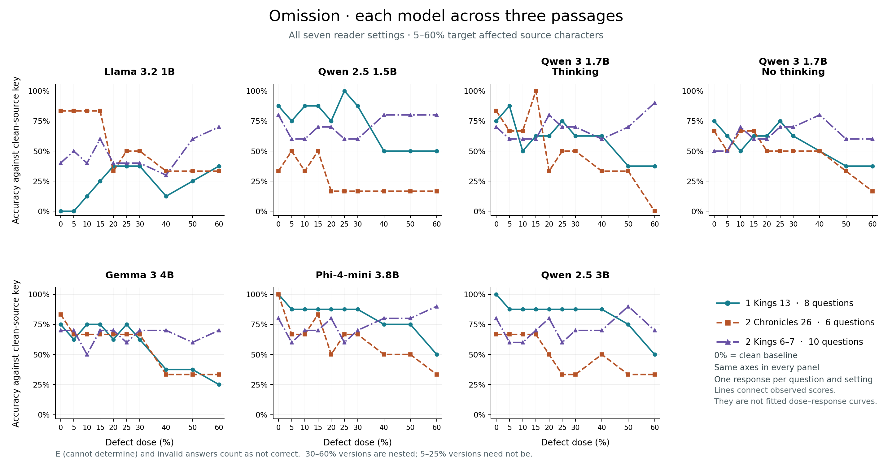
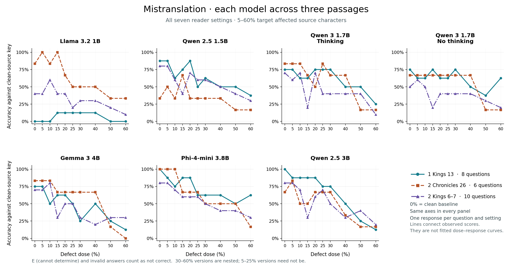

Each panel is one model setting. The three colored lines compare the passages; the axes are identical across panels. Qwen 3 thinking and no-thinking are shown separately.
Accuracy is measured against the clean-source answer key. Each point contains 8 questions for 1 Kings 13, 6 for 2 Chronicles 26, and 10 for 2 Kings 6–7. These small, repeated item sets do not establish a fitted curve or significance. E and invalid responses remain in the denominator.
Open scalable figure · Open PNG

Open scalable figure · Open PNG

Doses count affected clean Chinese source characters, with ±2 percentage-point tolerance. The 30–60% versions are nested; the 5–25% versions need not be. A higher score after omission does not establish improved comprehension: a model can match the clean key despite missing evidence. Original reader-specific prompts and scoring are retained, including GPT-4.1-mini mapping for unmatched nonempty primary-reader responses.